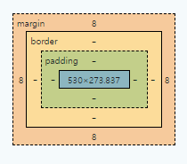

2. 공간정보 서비스 개발
1. 웹서비스를 구성하는 서버 구성 요소에 대한 설명으로 틀린 것은?
- client: 사용자
- Web server: 클라이언트 요청 처리
- WAS: 클라이언트 요청 히스토리 관리
- DBMS: 자료 관리
2. 클라이언트에서 웹서버에 정적자료(이미지, 텍스트)만 요청할 때 벌어지는 일은?
- 웹서버에서 이미지, 텍스트 등을 찾아 클라이언트에게 돌려준다.
- 웹서버에 이어 WAS까지 이 요청 처리에 참여한다.
- 웹서버, WAS, DBMS까지 이 요청 처리에 참여한다.
- 정적자료 요청은 웹서버까지 도달하지 않고 클라이언트에서 알아서 처리된다.
3. 클라이언트에서 동적자료(데이터베이스에 저장된 자료)를 요청할 때 벌어지는 일은?
- 웹서버에서 이미지, 텍스트 등을 찾아 클라이언트에게 돌려준다.
- 웹서버에 이어 WAS까지 이 요청 처리에 참여한다.
- 웹서버, WAS, DBMS까지 이 요청 처리에 참여한다.
- 정적자료 요청은 웹서버까지 도달하지 않고 클라이언트에서 알아서 처리된다.
4. HTML은 무엇의 약자인가?
- High Text Markup Language
- High Text Makeup Language
- HyperText Markup Language
- HyperText Makeup Language
5. hypertext가 뜻하는 것은?
- 웹에서 사용되는 모든 텍스트를 hypertext라 부른다
- 빅데이터
- 빠른 속도로 전달되어야 하는 자료
- 링크
6. 태그에 대한 설명으로 틀린 것은?
- HTML 내에서 어떤 효과를 주기 위한 표시이다
- 여는 태그와 닫는 태그가 있다.
- 모든 태그는 닫아야 한다.
- 속성값을 가질 수 있고, 속성값을 여러 개일 수 있다.
7. 브라우저의 탭에 적히는 문자열을 바꿀 수 있는 태그는?
- title
- body
- head
- b
8. 웹서비스 개발 중 보통 디자이너의 영역으로 웹브라우저에서 보여지는 모양을 꾸미기 위한 것은?
- HTML
- Javascript
- CSS
- library
9. <h1> 태그는 초록색으로 보여지도록 “태그 선택자“를 설정한 코드는?
<style>h1 {color: green}</style><style>.h1 {color: green}</style><css>h1 {color: green}</css><css>.h1 {color: green}</css>
10. 태그 선택자를 이용해 h1 태그는 모두 초록색으로 보여지도록 했는데, 특정 부분은 h1 태그라 하더라도 파란색으로 보여지게 하고 싶을 사용하는 것은?
- 태그 선택자
- 외부 스타일시트
- 레이아웃
- 클래스 선택자
11. 태그 선택자를 이용해 h1 태그는 모두 초록색으로 보여지도록 했는데, 특정 부분은 h1 태그라 하더라도 파란색으로 보여지게 만든 클래스 선택자가 포함된 css 파일의 내용으로 옳은 것은?
<h1 class="want_to_blue_text">공간정보 융합</h1>
.want_to_blue_text {color: blue}want_to_blue_text {color: blue}h1.want_to_blue_text {color: blue}h1_want_to_blue_text {color: blue}
12. 특별한 어떤 모양을 보여주지는 않는 태그로, 레이아웃이나 박스 형태의 경계선 등을 만들 때 사용하는 태그는?
- box
- layout
- boxes
- div
13. HTML의 table 등에서 “테두리“를 그리기 위한 css 요소는?
- border
- box
- layout
- line
14. css의 박스 모델의 요소들에 대한 설명을 틀린 것은?

- 콘텐츠 영역: 실제로 글, 그림 등이 보여지는 영역
- padding: border부터 콘텐츠 영역까지의 안쪽 여백
- border: 테두리선
- margin: 테두리선의 두께
15. 웹 UI에서 사용자가 ‘아이폰’ 이라고 쓰인 버튼을 누르는 이벤트가 발생하면 apple() 함수를 실행하는 HTML 코드는?
<button onClick='apple()'>아이폰<button><button click='apple()'>아이폰<button><button clickd='apple()'>아이폰<button><button clickevent='apple()'>아이폰<button>
16. 간단한 정보부터 복잡한 계산, DB 검색 결과, 지도 이미지 등을 웹을 통해 기능을 배포하는 방법은?
- SDK
- App
- open API
- layout
17. OGC 표준 기술 중 하나로 지도 위에 올라갈 정보를 이미지, raster 형태로 제공하는 기술은?
- WMS
- WFS
- WCS
- WMTS
18. OGC 표준 기술 중 하나로 지도 위에 올라갈 벡터 데이터 정보를 문자열 형태로 제공하는 기술은?
- WMS
- WFS
- WCS
- WMTS
19. OGC 표준 기술 중 지도를 하나의 통으로 제공하는 것이 아닌, 큰 이미지를 잘게 쪼갠 작은 타일 형태로 제공하는 기술은?
- WMS
- WFS
- WCS
- WMTS
20. 지도 앱을 만들 때 사용하는 openLayers에 대한 설명으로 틀린 것은?
- 자바스크립트를 이용해 지도 앱을 만든다
- 여러 개의 레이어를 사용할 수 있어 주제도를 만들기 편하다
- 지도의 위치와 확대 정도(줌)을 설정할 수 있다.
- 공공기관에서는 유료로 구입해 사용해야 한다.
21. openLayers 프로젝트를 ‘tset’ 라는 이름으로 생성하는 명령어로 옳은 것은?
npm create ol-app testnpm create openlayers testnpm create test projectnpm create project test
22. geoServer에 대한 설명으로 틀린 것은?
- 다양한 소스를 저장하고 있다가 WMS, WFS 등의 서비스를 제공해 지도 앱을 쉽게 만들 수 있다
- DBMS, CSV 파일과의 연계도 가능하다
- shp 파일은 사용하지 못한다는 단점이 있다.
- 무료로 사용할 수 있다.927